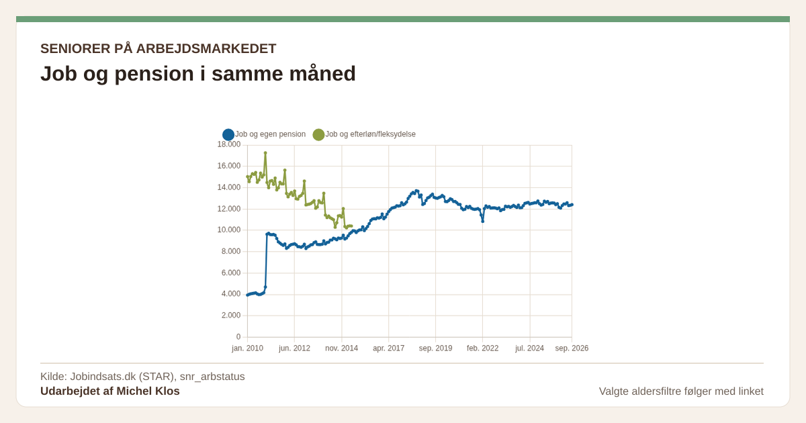

Michel Klos | Seniorer på arbejdsmarkedet
Job og pension i samme måned
Åbner den valgte graf. Du kan fortsætte med at udforske tallene i dashboardet.

Michel Klos | Seniorer på arbejdsmarkedet
Åbner den valgte graf. Du kan fortsætte med at udforske tallene i dashboardet.
